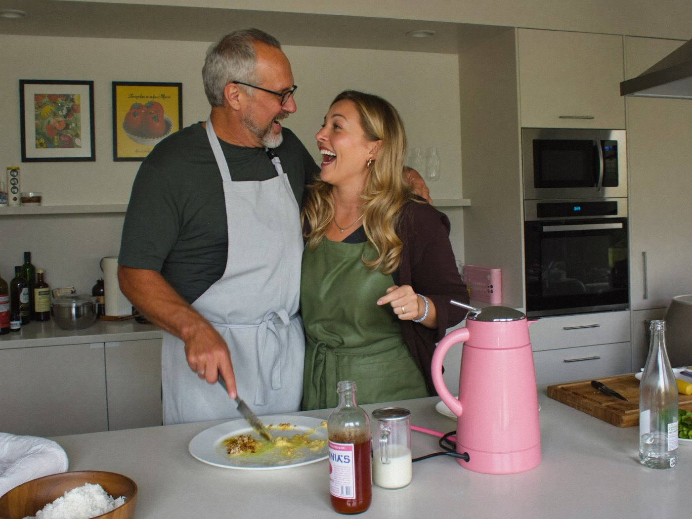

PAUSA · El manual de la menopausia09 · Para tu pareja
para ti,
que acompañas
Esta página está escrita para que ella te la pase. Si la estás leyendo, ya diste el primer paso: querer entender.

Fig. 79 · Acompañar se aprende
7,4 años
duran, en mediana, los calores frecuentes. No es «una etapa corta».
4,5 años
siguen, en mediana, después de la última regla. Y cambian con el tiempo.
Avis et al., estudio SWAN, JAMA Intern Med, 2015; NHS England, «Menopause for partners».
Lo que ayuda
Escucha sin arreglar
Pregunta «¿qué necesitas hoy?» antes de proponer.
Protege el sueño
Mantas distintas o dormir aparte alguna noche, sin dramas.
Reparte la carga
Asume tareas sin que te las pidan.
Infórmate
Lee la Parte I. Ofrece ir a la consulta, si ella quiere.
Fig. 80 · Basado en NHS England, «Menopause for partners».
Lo que no ayuda
✕«Son cosas de la edad.»
✕«Estás exagerando.»
✕«¿Otra vez con lo mismo?»
✕Tomarte cada cambio de humor como algo personal.
Guion · una conversación de 10 minutos
En un momento tranquilo, no en medio de una discusión
1Abre. «Quiero entender mejor lo que estás viviendo. ¿Me cuentas?»
2Valida. «Tiene sentido que estés agotada si no duermes bien.»
3Ofrece. «¿Qué cosa concreta puedo hacer esta semana?»
09 · Responsabilidad compartida46